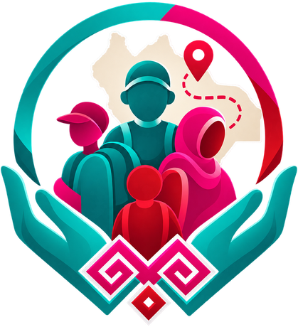
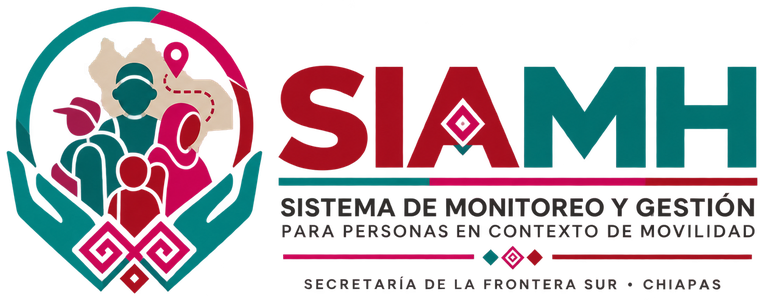

Gobierno de Chiapas · 2024–2030
Registro único y seguimiento de las personas en contexto de movilidad humana atendidas en el estado.

Mesa de ayuda · soporte.sfs@chiapas.gob.mx · ext. 2140
Lunes a viernes de 8:00 a 18:00 h